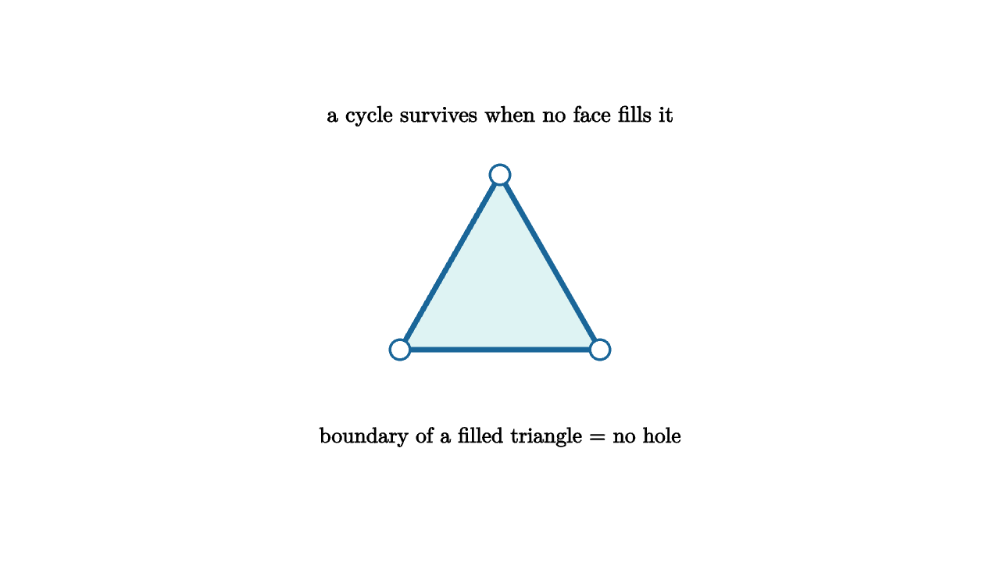

Homology Counts Holes by Adding Boundaries
The fundamental group is sensitive and expressive, but it can be hard to compute. Homology offers a more linear measurement. It replaces loops and surfaces by chains that can be added, subtracted, and passed through boundary maps. The slogan is compact: cycles modulo boundaries.
A 1-cycle is a formal sum of edges whose endpoints cancel. It has no boundary. On a triangle filled by a face, the loop around the triangle is the boundary of that face, so it represents no hole. On a hollow circle, the same kind of loop has no filling face, so it survives. Homology records exactly that survival.

source
let V = |p| center{p} fill{WHITE} stroke{BLUE, 2} Circle(0.08)
let E = |a, b, col| stroke{col, 4} Line(a, b)
let a = [-0.8, -0.55, 0]
let b = [0.8, -0.55, 0]
let c = [0, 0.85, 0]
mesh scene = [
center{1.32u} Text("a cycle survives when no face fills it", 0.64),
fill{alpha{0.16} TEAL} stroke{TEAL, 2} Triangle(a, b, c),
E(a, b, BLUE), E(b, c, BLUE), E(c, a, BLUE),
V(a), V(b), V(c),
center{1.25d} Text("boundary of a filled triangle = no hole", 0.62)
]The boundary map is the engine. It sends an oriented edge to its endpoint minus its startpoint. It sends an oriented triangle to the sum of its three boundary edges. Most importantly, the boundary of a boundary is zero. The edge loop around a triangle has zero endpoint boundary, and the triangle boundary maps to that edge loop. This single identity makes homology possible.
Algebra enters through quotient groups. A cycle is a chain with zero boundary. A boundary is a cycle that came from one dimension higher. Homology is the group of cycles after declaring boundaries trivial. If a loop is merely the rim of a filled disk, discard it. If no disk fills it, keep it.
source
let a = [-0.9, -0.5, 0]
let b = [0.9, -0.5, 0]
let c = [0, 0.85, 0]
let TriangleChain = |amount| [
fill{alpha{0.08 + 0.22 * amount} ORANGE} stroke{ORANGE, 2} Triangle(a, b, c),
stroke{BLUE, 5} Line(a, b),
stroke{BLUE, 5} Line(b, c),
stroke{BLUE, 5} Line(c, a)
]
"Cycle"
mesh title = center{1.33u} Text("cycles modulo boundaries", 0.68)
mesh tri = TriangleChain(0.2)
mesh caption = center{1.2d} Text("add a 2-chain and the rim becomes a boundary", 0.62)
tri = [
stroke{BLUE, 5} Line(a, b),
stroke{BLUE, 5} Line(b, c),
stroke{BLUE, 5} Line(c, a)
]
play Fade(0.7)
play Write(0.7)
"Boundary"
tri = TriangleChain(1)
play Trans(1.1)
caption = center{1.2d} Text("filled cycles vanish in homology", 0.62)
play Trans(0.6)Homology has several advantages. It is functorial: continuous maps induce homomorphisms on homology groups. It is computable: once a space is triangulated or cubulated, boundary maps become matrices. It is stable enough to survive messy input, which is why persistent homology is useful in data analysis.
Persistent homology builds a space at many scales. At a tiny scale, a point cloud is only separate dots. As the radius grows, components merge, loops appear, and loops fill in. A feature that appears and quickly dies may be noise. A feature that persists across many scales deserves attention. This turns topology into a signal-processing tool for shape.
The Betti numbers summarize ranks of homology groups. The zeroth Betti number counts connected components. The first counts independent one-dimensional holes. The second counts voids. A sphere has one component and one enclosed void, with no handle-like loop. A torus has one component, two independent loop directions, and one void-like two-dimensional class. These numbers capture durable features that often distinguish families of spaces.
Cool applications are everywhere. Sensor networks can use homology to detect coverage holes. Materials scientists can quantify pore networks. Computer vision can measure loops in high-dimensional activations. Dynamical systems can reveal recurrent structure in sampled trajectories. In each example, geometry supplies data, topology supplies invariants, and algebra supplies computation.
Homology is the algebraic eye becoming practical. It takes the visual idea of a hole and translates it into a kernel modulo an image. That phrase is linear algebra, but the content is geometric: what closes, what fills, and what remains.